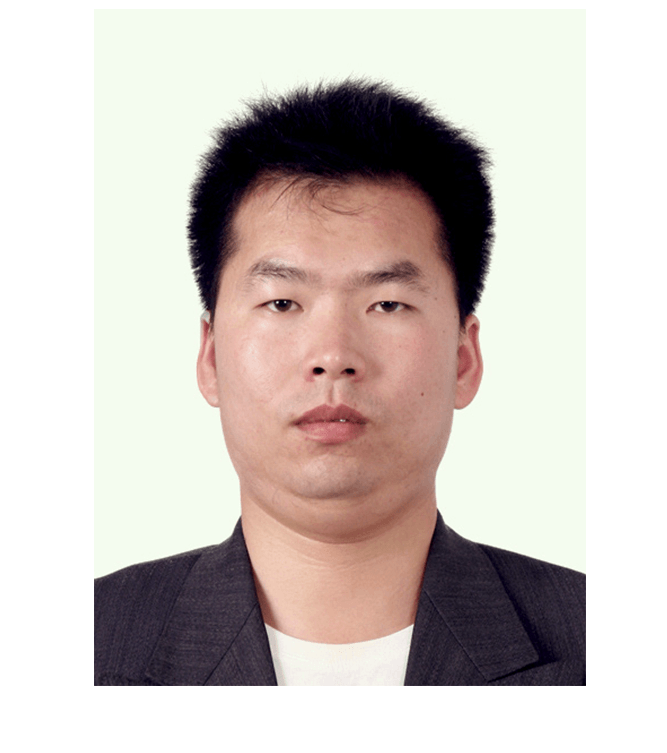

Yuanqiang Zhou (周远强), Ph.D.
|  |
Doctor of Philosophy (Ph.D.) Candidate
Affiliate

|
About Me
I received the B.S. degree in mathematics and applied mathematics at the Scholol of Science in 2013, and the M.S. degree in control science and engineering at the Scholol of Astronautics in 2015, from the Harbin Institute of Technology, Harbin, China. Since September 2015, I has been working toward the Ph.D. degree in control science and engineering with the Dapartment of Automation, School of Electronic Information and Electrical Engineering, Shanghai Jiao Tong University, Shanghai, China. From Oct 2017 to Sep 2019 (two years), I was a Visiting Student Researcher with the Department of Electrical and Computer Engineering, Tandon School of Engineering, New York University, NY, USA, sponsored by the China Scholarship Council.
I lived in New York City for nearly two years and had some knowledge about the history and the top tourist spots of New York City. Please feel free to contact me if you are interested in any part of my research work or come visit me for vacation.
Reseach Interests
Dr. Zhou' research is multi-disciplinary and draws from the areas of distributed model predictive control theory, multi-agent optimization, game theory, and computational intelligence. Interactions between networked multi-agents along with optimization-inspired approaches, are used to design and develop control system algorithms with guaranteed performance and stability. His current research focus is distributd model predictive control, multi-agent optimization, and reinforcement learning, with applications to cyber-physical security. He is also developing his hobby in intelligent vehicles.